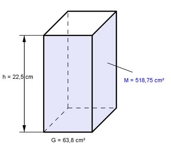

Aufgabe 4 Ein Prisma hat eine Grundfläche G von 63,8 cm², eine Höhe h von 22,5 cm und eine Mantelfläche M von 518,75 cm². Wie groß sind die Oberfläche O und der Umfang U der Grundfläche?  a) O = M + 2 * G O = 518,75 cm² + 2 * 63,8 cm² = 646,35 cm² b) M = U * h |:h M 518,75 cm² U = --- = ------------- = 23,06 cm h 22,5 cm